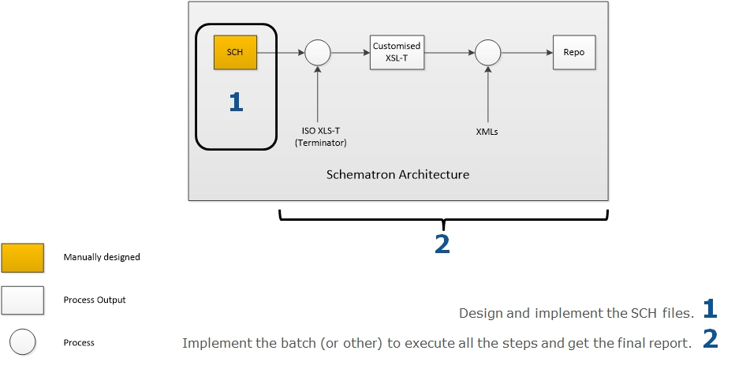

7.1 ISO Schematron
Schematron is a rule-based validation language to specify validation processes against XML documents. ISO Schematron is an ISO (ISO/IEC 19757-3:2006) and open standard. Please visit the ISO Schematron web-site for the technical specification and details.
ESPD Business Rules
The ESPD-EDM uses Schematron to validate business rules, the business requirements taken as input for these rules are specified in the ESPDint Business Document.
These business rules can be typified as:
-
Semantic validations: e.g. The "cac:TenderingCriterionResponse" in a Response document MUST match one, and only one, of the "cac:TenderingCriterionProperty" elements in the XML instance of the corresponding ESPD-Request;
-
Assertions about the presence or absence of patterns in XML documents: e.g. all business rules that apply to identifier nodes: mandatory attributes, structure of the identifier, etc.;
-
Code lists validations: e.g. values and attributes for each code list element;
-
Other validations that an XSD cannot do: e.g. Validates that one of the nodes has at least 1 child.
The following image shows different examples of validations:

The validation of code lists is explained in sections below.
Schematron Architecture
ISO Schematron executes the validations in two stages:
-
Design and implementation of the SCH files. SCH stands for Schematron Schema and contains the set of rules to be validated within the XML document.
-
Execution of the implemented validations in the SCH files:
-
Transformation of SCH files into XSLT files in order to be able to execute the validations against the XML.
-
Execution of the validations using the XSLT files to get the final report.
-

What does the SCH file contain?
-
Set of rules specifying the context (the element(s) and/or attribute(s) which the assertions affect);
-
Each rule have a set of assertions with the tests that must be evaluated in the context.

Execution
As a basis of the implementation, it has been taken into account:
-
Schematron "skeleton" implementation in XSLT.

This example describes the execution of the validation process using the Saxon library to execute XSLT files and the XSLT provided as a basis: